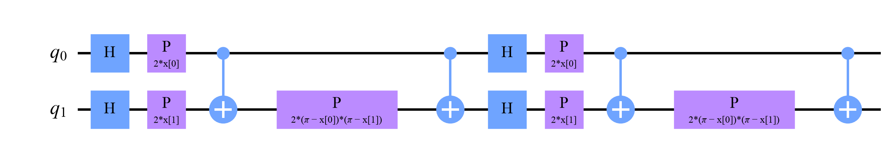
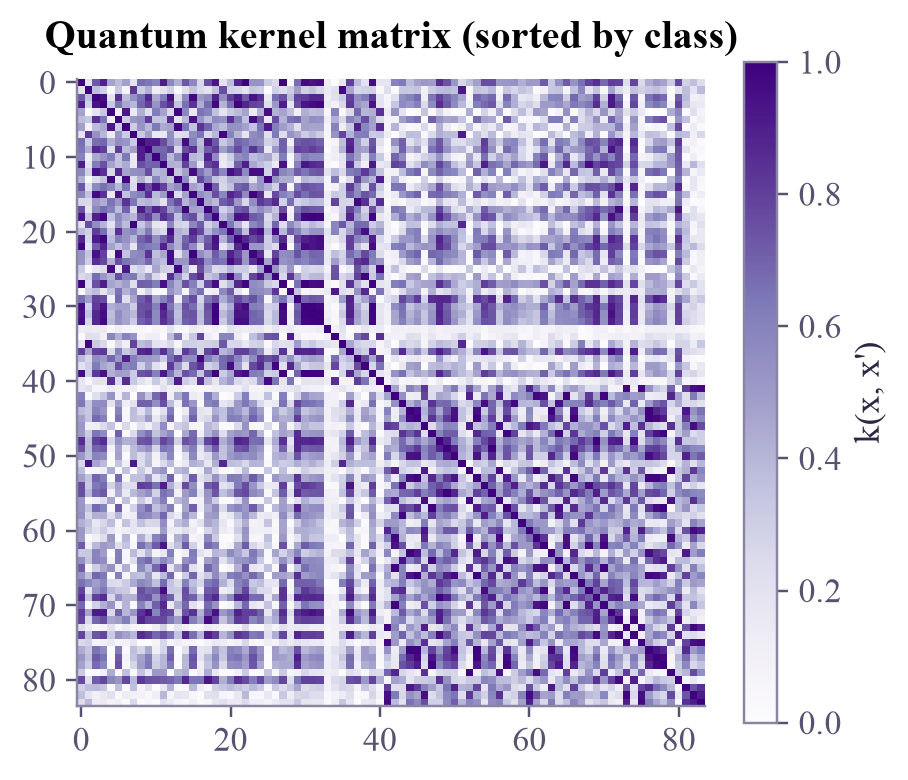
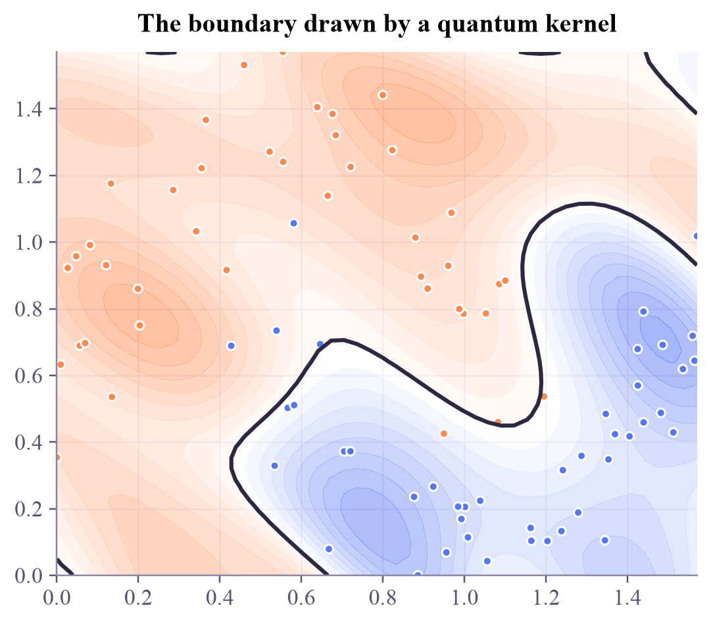

k(0.50, 0.50) = 1.000 formula cos²((x - x')/2) = 1.000 k(0.50, 1.00) = 0.939 formula cos²((x - x')/2) = 0.939 k(0.50, 2.00) = 0.535 formula cos²((x - x')/2) = 0.535 k(0.00, 3.14) = 0.000 formula cos²((x - x')/2) = 0.000
Quantum Machine Learning
 about 13 min
about 13 min qml-w2d1.ipynb
qml-w2d1.ipynb
Quantum kernels
Encode two data points, measure how much their states overlap, and hand that similarity to an SVM: the two halves of your term, joined in one model.
In this lesson you will
- Define a quantum kernel as the fidelity of two encoded states
- Explain why it is always a valid kernel: an inner product of density matrices
- Train a first quantum-kernel SVM, and see why the encoding's scale matters
Warm-up
1 minWhere the two tracks meet

In ML week 4 an SVM only ever needed one thing: a similarity between every pair of points. Last week you learned to encode points into quantum states and to measure how alike two states are. Put those together and you have a quantum machine-learning model. You already know every ingredient, so today is mostly "aha, so that's how they fit".
Big idea
5 minSimilarity, measured by a quantum computer
Recall ML week 4: an SVM only needs a kernel , a similarity between data points that is secretly an inner product in some feature space. A quantum computer offers a natural feature space: the states of qubits.
Step 1: encode. A feature-map circuit turns a data point into a state : angle encoding, or last Thursday's ZZ feature map.
Step 2: compare. The quantum kernel is the fidelity between two encoded states:
For one qubit with encoding this is : 1 for equal inputs, falling as they move apart. On hardware it's measured with Friday's inversion test: the probability of reading all zeros after and .
Why it's always a valid kernel. Write . Then , an ordinary inner product of two matrices. So the feature vectors are the density matrices ( real numbers each), and the kernel matrix can never have negative eigenvalues: exactly the property an SVM needs.
Step 3: learn. Fill the kernel matrix with these numbers and hand it to SVC(kernel="precomputed"). The quantum computer only measures similarities; the classical SVM does the learning.
Is it better than classical?
Not automatically! On toy data like ours, a classical RBF kernel does just as well. Quantum kernels are interesting when the feature map captures structure that is hard to compute classically, and finding such data is an open research question. A known trap: if the encoding spreads states too far apart, every pair looks almost orthogonal (all kernel values near 0), and the model can't learn. With many qubits this exponential concentration becomes severe (Thursday's lesson).
Play
5 minOverlaps and a quantum SVM
One qubit. Encode two numbers as two arrows. Their kernel is how much the arrows overlap.
Two qubits, a whole dataset. Every point is encoded with the ZZ feature map (simulated right here in your browser), the kernel matrix is filled in, and an SVM trains on it. Change the encoding scale and watch both the matrix and the boundary.
Try this
Push the scale down to 0.2: the kernel matrix turns almost uniformly dark (everything looks similar) and the boundary gets lazy. Push it up to 3: the matrix becomes speckled with small values and the boundary breaks into islands. The useful zone is in between, and with more qubits it gets narrower.
Code
3 minA quantum SVM in Qiskit
The notebook for this lessonEvery code cell below, with what it printed, is in
qml-w2d1.ipynb. To change the code and run it yourself, open the notebook in Google Colab (free, in your browser) or download it for your own Jupyter.import numpy as np
from qiskit import QuantumCircuit
from qiskit.quantum_info import Statevector
def encode_1q(x):
qc = QuantumCircuit(1)
qc.ry(x, 0) # the data point becomes a rotation angle
return Statevector(qc)
def kernel_1q(x, x2):
return abs(encode_1q(x).inner(encode_1q(x2))) ** 2
for x, x2 in [(0.5, 0.5), (0.5, 1.0), (0.5, 2.0), (0.0, np.pi)]:
print(f"k({x:.2f}, {x2:.2f}) = {kernel_1q(x, x2):.3f} formula cos²((x - x')/2) = {np.cos((x - x2) / 2) ** 2:.3f}")What it printed in the notebook
from qiskit.circuit import ParameterVector
x = ParameterVector("x", 2)
fmap = QuantumCircuit(2)
for repetition in range(2):
fmap.h([0, 1])
fmap.p(2 * x[0], 0)
fmap.p(2 * x[1], 1)
fmap.cx(0, 1)
fmap.p(2 * (np.pi - x[0]) * (np.pi - x[1]), 1) # depends on BOTH features
fmap.cx(0, 1)
fmap.draw("mpl", style="clifford", fold=-1)What it printed in the notebook

import matplotlib.pyplot as plt
from sklearn.datasets import make_moons
from sklearn.preprocessing import MinMaxScaler
from sklearn.model_selection import train_test_split
X, y = make_moons(n_samples=120, noise=0.15, random_state=0)
X = MinMaxScaler((0, np.pi / 2)).fit_transform(X) # features become angles between 0 and π/2
X_train, X_test, y_train, y_test = train_test_split(X, y, test_size=0.3, random_state=0)
def statevectors(data):
return np.array([Statevector(fmap.assign_parameters(point)).data for point in data])
def quantum_kernel(A, B):
return np.abs(statevectors(A).conj() @ statevectors(B).T) ** 2 # |<phi(a)|phi(b)>|^2 for every pair
K_train = quantum_kernel(X_train, X_train)
order = np.argsort(y_train)
plt.figure(figsize=(4.6, 3.9))
plt.imshow(K_train[np.ix_(order, order)], cmap="Purples", vmin=0, vmax=1)
plt.colorbar(label="k(x, x')")
plt.title("Quantum kernel matrix (sorted by class)")
plt.grid(False)
plt.show()What it printed in the notebook

from sklearn.svm import SVC
K_test = quantum_kernel(X_test, X_train)
qsvm = SVC(kernel="precomputed").fit(K_train, y_train)
classical = SVC(kernel="rbf").fit(X_train, y_train)
print("quantum kernel SVM, test accuracy:", round(qsvm.score(K_test, y_test), 3))
print("classical RBF SVM, test accuracy :", round(classical.score(X_test, y_test), 3))What it printed in the notebook
quantum kernel SVM, test accuracy: 0.917 classical RBF SVM, test accuracy : 0.917
from matplotlib.colors import LinearSegmentedColormap
apricot_blue = LinearSegmentedColormap.from_list("apricot_blue", ["#ff8a50", "#ffffff", "#5577f5"])
gx, gy = np.meshgrid(np.linspace(0, np.pi / 2, 50), np.linspace(0, np.pi / 2, 50))
grid = np.c_[gx.ravel(), gy.ravel()]
decision = qsvm.decision_function(quantum_kernel(grid, X_train)).reshape(gx.shape)
fig, ax = plt.subplots(figsize=(4.8, 4.2), layout="constrained")
ax.contourf(gx, gy, decision, levels=20, cmap=apricot_blue, alpha=0.55)
ax.contour(gx, gy, decision, levels=[0], colors="#2c2842", linewidths=2)
ax.scatter(X_train[:, 0], X_train[:, 1], c=np.where(y_train == 0, "#ff8a50", "#5577f5"), s=18)
ax.set_title("The boundary drawn by a quantum kernel")
plt.show()What it printed in the notebook

Your turn
2 minYour turn: a valid kernel, and its feature vectors
Check that the quantum kernel matrix is symmetric with no negative eigenvalues, and that for two training points.
eigenvalues = None # TODO: np.linalg.eigvalsh(K_train)
print("symmetric:", np.allclose(K_train, K_train.T))
# TODO: print the smallest eigenvalue
# TODO: rho_a = np.outer(s_a, s_a.conj()) for the statevectors of X_train[0] and X_train[1]; compare np.trace(rho_a @ rho_b).real with K_train[0, 1]Need a hint?
np.linalg.eigvalsh(K_train).min() for the eigenvalues. For the density matrices: np.outer(s, s.conj()) from a statevector s, then np.trace(rho_a @ rho_b).real.
Show a solution
eigenvalues = np.linalg.eigvalsh(K_train)
print("symmetric:", np.allclose(K_train, K_train.T), " smallest eigenvalue:", f"{eigenvalues.min():.1e}", "(zero, up to rounding)")
s_a, s_b = statevectors(X_train[:2])
rho_a, rho_b = np.outer(s_a, s_a.conj()), np.outer(s_b, s_b.conj())
print(f"Tr(rho_a rho_b) = {np.trace(rho_a @ rho_b).real:.6f} K_train[0, 1] = {K_train[0, 1]:.6f}")
print("Every quantum kernel of this kind is automatically valid: it's an inner product of density matrices,")
print("feature vectors with 4^n real entries (16 for our 2 qubits).")What it printed in the notebook
symmetric: True smallest eigenvalue: -7.0e-15 (zero, up to rounding) Tr(rho_a rho_b) = 0.194465 K_train[0, 1] = 0.194465 Every quantum kernel of this kind is automatically valid: it's an inner product of density matrices, feature vectors with 4^n real entries (16 for our 2 qubits).
Check yourself
1 minQuick check
Question 1 of 3
What does a quantum kernel compute for two data points?
Question 2 of 3
In a quantum-kernel SVM, which part runs on the quantum computer?
Question 3 of 3
Almost all off-diagonal kernel values are near 0. What's going on?
Wrap-up
1 minToday in one sentence
Research link
Which feature maps help, how to avoid concentration, how noise and shot budgets affect the kernel, how to handle imbalanced data: these are live questions in quantum machine learning, and exactly the kind of questions a first research project can ask.
Go deeper (optional)
Schuld and Killoran, "Quantum machine learning in feature Hilbert spaces" (Physical Review Letters, 2019), and Schuld, "Supervised quantum machine learning models are kernel methods" (arXiv, 2021), which shows that many quantum models are kernel methods in disguise.
Next in Quantum ML: kernel matrices on a real budget: how many circuits, how many shots, and what noise does to them.
That's the lesson!
Tap the button to save it. Short and steady wins.
Marked by mistake? Undo